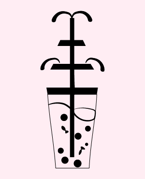
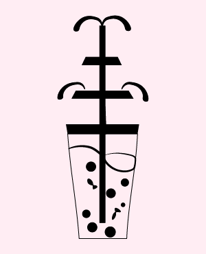

Oceans of Milk tea
(2022)
Milk tea in cups sound perfect. Milk tea in fountain-level bounty? Now, that's absurd.
I played with the idea of absurdity by making what was normally a small thing into
something exaggeratedly big, allowing for some whimsical liberties to take place. By
invoking the famous wave imagery from the Japanese print, it parodies The Great Wave
off Kanagawa by equating the silly topic to it. A fun experiment in taking an ordinary
object and making something silly with it.
Tool: Illustrator